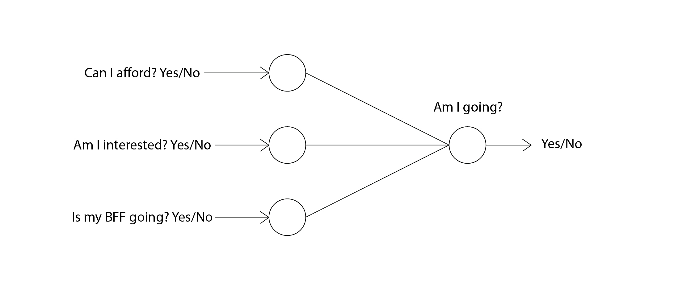

Perceptrons
Revisiting the decision making example from the Intro to Neural Network section, we can build a simple neural network that looks like this:

This network takes three yes/no (binary) input and decides wether you
want to go on the trip or not. The righmost neuron here is a Perceptron.
Perceptrons take some binary input and outputs a binary number (yes/no).
Each input has a weight indicating the importance relative to other
inputs that can alter the final output.
This is what a single perceptron looks like:
Here, x1, x2 and x3 inputs for our perceptron and w1, w2 and w3 are weights of the corresponding input.
There is one property of a perceptron that we haven't yet talked about. It's called bias. Just as inputs have weights, the perceptron has a bias. Bias is a number that decides how likely the perceptron is to produce an affirmative output. It can be compared to the trip decision making network as "how likely you are to go on a trip in general". Then no matter what the inputs are, the possibility of you going on a trip greatly increases if your bias is high. To completely understand how the output is calculated, we need to get into some math. So buckle up!
Output of a perceptron is binary (1 or 0 / yes or no) and it is calculated as follows:
1. First we calculate the weighted sum of the inputs (multiply weight with corresponding input values and add all of them together)
2. Then we add the bias (denoted as b)
3. Lastly we comapre if the value of this expression is greater than 0 or not. If it is the output of the perceptron is 1, otherwise 0
if (x1*w1) + (x2*w2) + (x3*w3) + b <= 0 , output = 0
From this inequality, we can see that if bias is higher, the more it is likely to produce 1 as a output.
Since not all perceptrons have 3 inputs, we can write a generalized formula that is independent of number of inputs:
if ∑jwjxj + b <= 0 , output = 0
Here, j is the number of inputs.